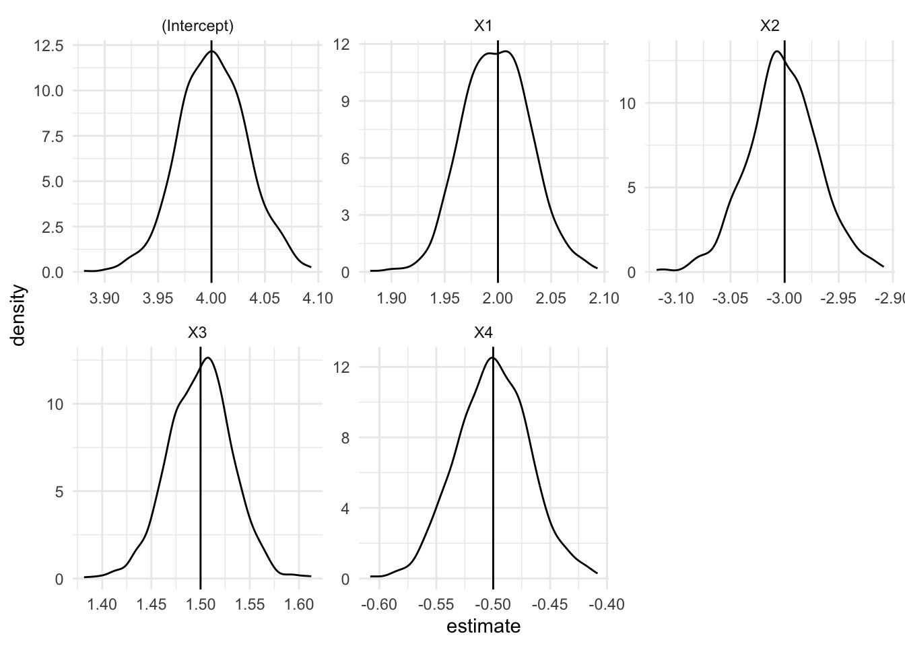
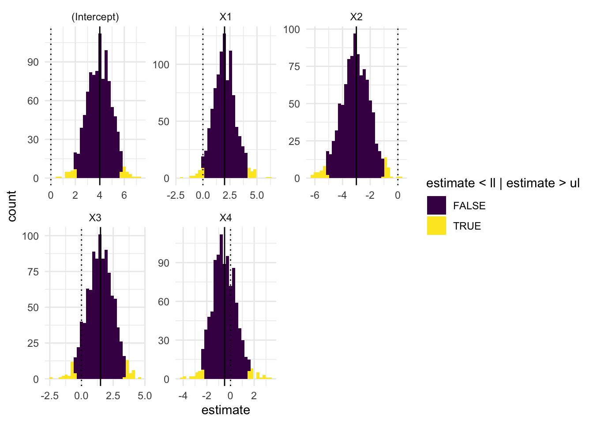

# 欠損値のあるデータを作成
x <- c(1,2,3,NA,5)
# 欠損値があると値はNAとなる
mean(x)[1] NA# 欠損値を除いて分析する
mean(x, na.rm = TRUE)[1] 2.75# 欠損値のあるデータを作成
x <- c(1,2,3,NA,5)
# 欠損値があると値はNAとなる
mean(x)[1] NA# 欠損値を除いて分析する
mean(x, na.rm = TRUE)[1] 2.75# サンプルサイズ
length(x)[1] 5# 欠損値を除いたサンプルサイズ
sum(!is.na(x))[1] 4sum(!is.na(x))はやや複雑なので関数を作成する．
# 欠損値を除いたサンプルサイズを求める関数
complete_obs <- function(x){
sum(!is.na(x))
}
complete_obs(x)[1] 4library(tidyverse)── Attaching core tidyverse packages ──────────────────────── tidyverse 2.0.0 ──
✔ dplyr 1.1.3 ✔ readr 2.1.4
✔ forcats 1.0.0 ✔ stringr 1.5.0
✔ ggplot2 3.4.3 ✔ tibble 3.2.1
✔ lubridate 1.9.2 ✔ tidyr 1.3.0
✔ purrr 1.0.2
── Conflicts ────────────────────────────────────────── tidyverse_conflicts() ──
✖ dplyr::filter() masks stats::filter()
✖ dplyr::lag() masks stats::lag()
ℹ Use the conflicted package (<http://conflicted.r-lib.org/>) to force all conflicts to become errorslibrary(janitor)
Attaching package: 'janitor'
The following objects are masked from 'package:stats':
chisq.test, fisher.testlibrary(palmerpenguins)
penguins |> count(species)# A tibble: 3 × 2
species n
<fct> <int>
1 Adelie 152
2 Chinstrap 68
3 Gentoo 124my_oneway_table <- function(data, var){
data |> janitor::tabyl({{var}}) |>
janitor::adorn_totals() |>
as_tibble()
}
penguins |> my_oneway_table(species)# A tibble: 4 × 3
species n percent
<fct> <int> <dbl>
1 Adelie 152 0.442
2 Chinstrap 68 0.198
3 Gentoo 124 0.360
4 Total 344 1 my_twoway_table <- function(data, row, col,...){
tab <- data |> janitor::tabyl({{row}}, {{col}}, show_na = FALSE)
row <- tab |> janitor::adorn_percentages("row")
col <- tab |>janitor:: adorn_percentages("col")
chisq_test <- chisq.test(tab)
list("Freq" = tab |> as_tibble(),
"Row" = row |> as_tibble(),
"Column" = col |> as_tibble(),
"Chi-squared Test" = chisq_test)
}
my_twoway_table(data = penguins, row = species, col = sex)$Freq
# A tibble: 3 × 3
species female male
<fct> <dbl> <dbl>
1 Adelie 73 73
2 Chinstrap 34 34
3 Gentoo 58 61
$Row
# A tibble: 3 × 3
species female male
<fct> <dbl> <dbl>
1 Adelie 0.5 0.5
2 Chinstrap 0.5 0.5
3 Gentoo 0.487 0.513
$Column
# A tibble: 3 × 3
species female male
<fct> <dbl> <dbl>
1 Adelie 0.442 0.435
2 Chinstrap 0.206 0.202
3 Gentoo 0.352 0.363
$`Chi-squared Test`
Pearson's Chi-squared test
data: tab
X-squared = 0.048607, df = 2, p-value = 0.976関数の引数を左辺に持ってくる場合は=ではなく:=を用いる． 次は第3引数に新しい変数名（デフォルトはlogged_var）を指定することができる関数である．また新しい変数を使って全体平均も求めている．
log_var <-
function(data, x, newvar = logged_var){
data |>
mutate({{newvar}} := log({{x}}),
grand_mean := mean({{newvar}},
na.rm = TRUE))
}
log_var(penguins, bill_length_mm)# A tibble: 344 × 10
species island bill_length_mm bill_depth_mm flipper_length_mm body_mass_g
<fct> <fct> <dbl> <dbl> <int> <int>
1 Adelie Torgersen 39.1 18.7 181 3750
2 Adelie Torgersen 39.5 17.4 186 3800
3 Adelie Torgersen 40.3 18 195 3250
4 Adelie Torgersen NA NA NA NA
5 Adelie Torgersen 36.7 19.3 193 3450
6 Adelie Torgersen 39.3 20.6 190 3650
7 Adelie Torgersen 38.9 17.8 181 3625
8 Adelie Torgersen 39.2 19.6 195 4675
9 Adelie Torgersen 34.1 18.1 193 3475
10 Adelie Torgersen 42 20.2 190 4250
# ℹ 334 more rows
# ℹ 4 more variables: sex <fct>, year <int>, logged_var <dbl>, grand_mean <dbl>log_var(penguins, bill_length_mm, log_bill_length_mm)# A tibble: 344 × 10
species island bill_length_mm bill_depth_mm flipper_length_mm body_mass_g
<fct> <fct> <dbl> <dbl> <int> <int>
1 Adelie Torgersen 39.1 18.7 181 3750
2 Adelie Torgersen 39.5 17.4 186 3800
3 Adelie Torgersen 40.3 18 195 3250
4 Adelie Torgersen NA NA NA NA
5 Adelie Torgersen 36.7 19.3 193 3450
6 Adelie Torgersen 39.3 20.6 190 3650
7 Adelie Torgersen 38.9 17.8 181 3625
8 Adelie Torgersen 39.2 19.6 195 4675
9 Adelie Torgersen 34.1 18.1 193 3475
10 Adelie Torgersen 42 20.2 190 4250
# ℹ 334 more rows
# ℹ 4 more variables: sex <fct>, year <int>, log_bill_length_mm <dbl>,
# grand_mean <dbl>function(x)は\(x)のようにしてもよい．
complete_obs <- \(.) sum(!is.na(.))
complete_obs(x)[1] 4関数の名前を定義せずに関数を使用することもある． とくに一時的に計算をしたい場合など？
mean_sd_list <- function(x) list(Mean = mean(x, na.rm = TRUE),
SD = sd(x, na.rm = TRUE))
mean_sd_list(1:10)$Mean
[1] 5.5
$SD
[1] 3.02765(function(x))(a)とする．
(function(x) list(Mean = mean(x, na.rm = TRUE),
SD = sd(x, na.rm = TRUE)))(1:10)$Mean
[1] 5.5
$SD
[1] 3.02765function(x)は\(x)のように省略できる．またxのかわりに.を使うこともできる．
(function(.) list(Mean = mean(., na.rm = TRUE),
SD = sd(., na.rm = TRUE),
n_obs = sum(!is.na(.))))(1:10)$Mean
[1] 5.5
$SD
[1] 3.02765
$n_obs
[1] 10(\(.) list(Mean = mean(., na.rm = TRUE),
SD = sd(., na.rm = TRUE),
n_obs = sum(!is.na(.))))(1:10)$Mean
[1] 5.5
$SD
[1] 3.02765
$n_obs
[1] 10\(n = 1000\)のランダムサンプルのデータを用いて，回帰分析を実行して係数を表示する関数run_lmを定義し，それを10000回実行するプログラム．run_lmには引数がない．
# 必要なパッケージの読み込み
library(tidyverse)
library(broom)
# シミュレーションの設定
set.seed(123456) # 乱数の再現性のためにseedを設定
n <- 1000 # サンプルサイズ
b0 <- 4
b1 <- 2
b2 <- - 3
b3 <- 1.5
b4 <- - 0.5
# 関数を定義して1回のシミュレーションを行う（通常の回帰分析）
run_lm <- function() {
sim_data <- tibble(
X1 = rnorm(n),
X2 = rnorm(n),
X3 = rnorm(n),
X4 = rnorm(n),
Y = b0 + b1 * X1 + b2 * X2 + b3 * X3 + b4 * X4 + rnorm(n)
) |>
relocate(Y)
fit <- sim_data |>
glm(Y ~ X1 + X2 + X3 + X4, data = _)
tidy(fit)
}
# 回帰分析が1回実行される
run_lm()# A tibble: 5 × 5
term estimate std.error statistic p.value
<chr> <dbl> <dbl> <dbl> <dbl>
1 (Intercept) 4.00 0.0317 126. 0
2 X1 2.09 0.0320 65.3 0
3 X2 -3.02 0.0312 -96.9 0
4 X3 1.54 0.0315 48.8 2.23e-266
5 X4 -0.470 0.0328 -14.3 1.83e- 42fit_sim <- map_dfr(1:1000, ~run_lm(), .id = "simulation")
fit_sim# A tibble: 5,000 × 6
simulation term estimate std.error statistic p.value
<chr> <chr> <dbl> <dbl> <dbl> <dbl>
1 1 (Intercept) 4.04 0.0309 131. 0
2 1 X1 1.96 0.0303 64.8 0
3 1 X2 -3.02 0.0312 -96.9 0
4 1 X3 1.45 0.0304 47.8 3.06e-260
5 1 X4 -0.462 0.0315 -14.7 2.89e- 44
6 2 (Intercept) 3.99 0.0322 124. 0
7 2 X1 2.00 0.0324 61.9 0
8 2 X2 -2.98 0.0318 -93.8 0
9 2 X3 1.49 0.0318 47.0 3.67e-255
10 2 X4 -0.493 0.0332 -14.8 3.31e- 45
# ℹ 4,990 more rows# 推定値の平均値，分散，標準偏差を求める
fit_sim |> summarise(mean = mean(estimate),
var = mean((estimate - mean)^2),
sd = sqrt(var),
n = n(),
.by = term)# A tibble: 5 × 5
term mean var sd n
<chr> <dbl> <dbl> <dbl> <int>
1 (Intercept) 4.00 0.00102 0.0320 1000
2 X1 2.00 0.000977 0.0313 1000
3 X2 -3.00 0.00105 0.0323 1000
4 X3 1.50 0.00101 0.0318 1000
5 X4 -0.500 0.00101 0.0317 1000# 推定値の分布を図にする．
fit_sim |>
ggplot(aes(x = estimate)) +
geom_density() +
geom_vline(data = fit_sim |> filter(term == "(Intercept)"), aes(xintercept = b0)) +
geom_vline(data = fit_sim |> filter(term == "X1"), aes(xintercept = b1)) +
geom_vline(data = fit_sim |> filter(term == "X2"), aes(xintercept = b2)) +
geom_vline(data = fit_sim |> filter(term == "X3"), aes(xintercept = b3)) +
geom_vline(data = fit_sim |> filter(term == "X4"), aes(xintercept = b4)) +
facet_wrap(~term, scale = "free") +
theme_minimal()
set.seed(123456)
N <- 10e6
n <- 100
b0 <- 4
b1 <- 2
b2 <- - 3
b3 <- 1.5
b4 <- - 0.5
# 母集団データ
pop_data <- tibble(
X1 = rnorm(N),
X2 = rnorm(N),
X3 = rnorm(N),
X4 = rnorm(N),
Y = b0 + b1 * X1 + b2 * X2 + b3 * X3 + b4 * X4 + rnorm(N, sd = 10)) |>
relocate(Y)
pop_data# A tibble: 10,000,000 × 5
Y X1 X2 X3 X4
<dbl> <dbl> <dbl> <dbl> <dbl>
1 -5.96 0.834 -0.228 -0.836 -0.759
2 -8.23 -0.276 -0.112 0.0974 -0.201
3 3.25 -0.355 1.79 -0.963 -2.07
4 12.8 0.0875 1.29 -0.615 -0.392
5 -3.24 2.25 1.43 0.0347 -0.650
6 -7.93 0.834 0.878 -0.712 0.228
7 24.4 1.31 -0.0411 -0.320 0.637
8 17.0 2.50 -1.21 2.10 1.09
9 18.5 1.17 1.15 0.404 1.14
10 4.45 -0.426 0.435 -0.613 -0.178
# ℹ 9,999,990 more rows# n = 100のサンプリングを行った上で，回帰分析によって係数を求め，tibble形式で示す関数
sample_and_lm <- function() {
pop_data |> # 母集団
sample_n(size = n) |> # n = 100でサンプリング
lm(Y ~ X1 + X2 + X3 + X4, data = _) |> # 回帰分析
tidy() # 係数をまとめる
}
sample_and_lm()# A tibble: 5 × 5
term estimate std.error statistic p.value
<chr> <dbl> <dbl> <dbl> <dbl>
1 (Intercept) 3.99 1.02 3.91 0.000173
2 X1 3.51 1.02 3.46 0.000820
3 X2 -2.28 0.994 -2.29 0.0243
4 X3 -0.150 0.992 -0.151 0.880
5 X4 -0.766 1.23 -0.625 0.533 # sample_and_lm() を1000回実行する
fit_sim <- map_dfr(1:1000,
~sample_and_lm(),
.id = "simulation")
fit_sim# A tibble: 5,000 × 6
simulation term estimate std.error statistic p.value
<chr> <chr> <dbl> <dbl> <dbl> <dbl>
1 1 (Intercept) 5.16 0.980 5.26 0.000000891
2 1 X1 1.56 0.989 1.57 0.119
3 1 X2 -2.67 0.899 -2.96 0.00383
4 1 X3 1.32 0.961 1.37 0.173
5 1 X4 -0.00812 0.909 -0.00894 0.993
6 2 (Intercept) 2.65 0.820 3.23 0.00172
7 2 X1 1.93 0.792 2.44 0.0167
8 2 X2 -3.58 0.747 -4.79 0.00000617
9 2 X3 1.61 0.902 1.79 0.0767
10 2 X4 -0.639 0.789 -0.810 0.420
# ℹ 4,990 more rows# 推定値の平均値，分散，標準偏差を求める
fit_sim |>
summarise(mean = mean(estimate),
var = mean((estimate - mean)^2),
sd = sqrt(var),
n = n(),
.by = term)# A tibble: 5 × 5
term mean var sd n
<chr> <dbl> <dbl> <dbl> <int>
1 (Intercept) 3.95 1.02 1.01 1000
2 X1 1.99 1.09 1.05 1000
3 X2 -3.07 1.07 1.03 1000
4 X3 1.48 1.05 1.02 1000
5 X4 -0.529 1.06 1.03 1000# 推定値の分布を図にする．
fit_sim |>
mutate(ll = quantile(estimate, probs = c(0.025)),
ul = quantile(estimate, probs = c(0.975)),
.by = term) |>
ggplot(aes(x = estimate)) +
geom_histogram(aes(fill = estimate < ll | estimate > ul)) +
geom_vline(data = fit_sim |> filter(term == "(Intercept)"), aes(xintercept = b0)) +
geom_vline(data = fit_sim |> filter(term == "X1"), aes(xintercept = b1)) +
geom_vline(data = fit_sim |> filter(term == "X2"), aes(xintercept = b2)) +
geom_vline(data = fit_sim |> filter(term == "X3"), aes(xintercept = b3)) +
geom_vline(data = fit_sim |> filter(term == "X4"), aes(xintercept = b4)) +
geom_vline(xintercept = 0, linetype = "dotted") +
facet_wrap(~term, scale = "free") +
scale_fill_viridis_d() +
theme_minimal()`stat_bin()` using `bins = 30`. Pick better value with `binwidth`.
lm_function <-
function(data, n = nrow(data), y, X){
data |>
dplyr::sample_n(size = n) |>
select(y = {{y}}, {{X}}) |>
estimatr::lm_robust(y ~ ., data = _) |>
tidy()
}
lm_function(pop_data, n = 100, y = Y, X = c(X1, X2)) term estimate std.error statistic p.value conf.low conf.high
1 (Intercept) 4.423696 1.091784 4.051804 0.0001024999 2.256806 6.5905851
2 X1 3.388347 1.035325 3.272736 0.0014763534 1.333513 5.4431814
3 X2 -2.554605 1.092982 -2.337280 0.0214803542 -4.723872 -0.3853386
df outcome
1 97 y
2 97 y
3 97 y図や表にする場合に用いる．
my_round <- function(x, digits = 1){
format(round(x, digits), nsmall = digits)
}
my_round(91.2)[1] "91.2"my_round(91.0)[1] "91.0"my_round(0.123, 3)[1] "0.123"my_round(0.120, 3)[1] "0.120"``
source("https://raw.githubusercontent.com/ShoFujihara/R4SS/main/scripts/twoway_categorical_plot.R")
twoway_categorical_plotfunction (data, row, col, varname_row = "Row", varname_col = "Column",
label_col = "Column", digits = 3)
{
tab <- xtabs(~row + col, data = drop_na(mutate(data, row = {
{
row
}
}, col = {
{
col
}
}), row, col))
N <- sum(tab)
X2 <- pluck(chisq.test(tab), "statistic")
df <- pluck(chisq.test(tab), "parameter")
p <- pluck(chisq.test(tab), "p.value")
CV <- DescTools::CramerV(tab, conf.level = 0.95)
ggplot(mutate(ungroup(mutate(group_by(drop_na(count(data,
{
{
row
}
}, {
{
col
}
})), {
{
row
}
}), sub_total = sum(n), prop = n/sub_total)), row = haven::as_factor({
{
row
}
}), col = haven::as_factor({
{
col
}
})), aes(x = forcats::fct_rev(row), y = prop, fill = forcats::fct_rev(col))) +
geom_col() + geom_text(aes(label = scales::percent(round(prop,
3))), position = position_stack(vjust = 0.5)) + theme_minimal(base_family = "HiraKakuPro-W3") +
coord_flip() + guides(fill = guide_legend(reverse = TRUE)) +
theme(legend.position = "top") + scale_y_continuous(labels = scales::percent) +
labs(x = varname_row, y = varname_col, fill = label_col,
caption = paste0("N = ", N, "\nX-squared = ", format(round(X2,
digits), nsmall = digits), ", d.f. = ", df, ", p = ",
format(round(p, digits), nsmall = digits), "\nCramer's V = ",
format(round(CV[1], digits), nsmall = digits),
" (", format(round(CV[2], digits), nsmall = digits),
", ", format(round(CV[3], digits), nsmall = digits),
")")) + scale_colour_viridis_d()
}